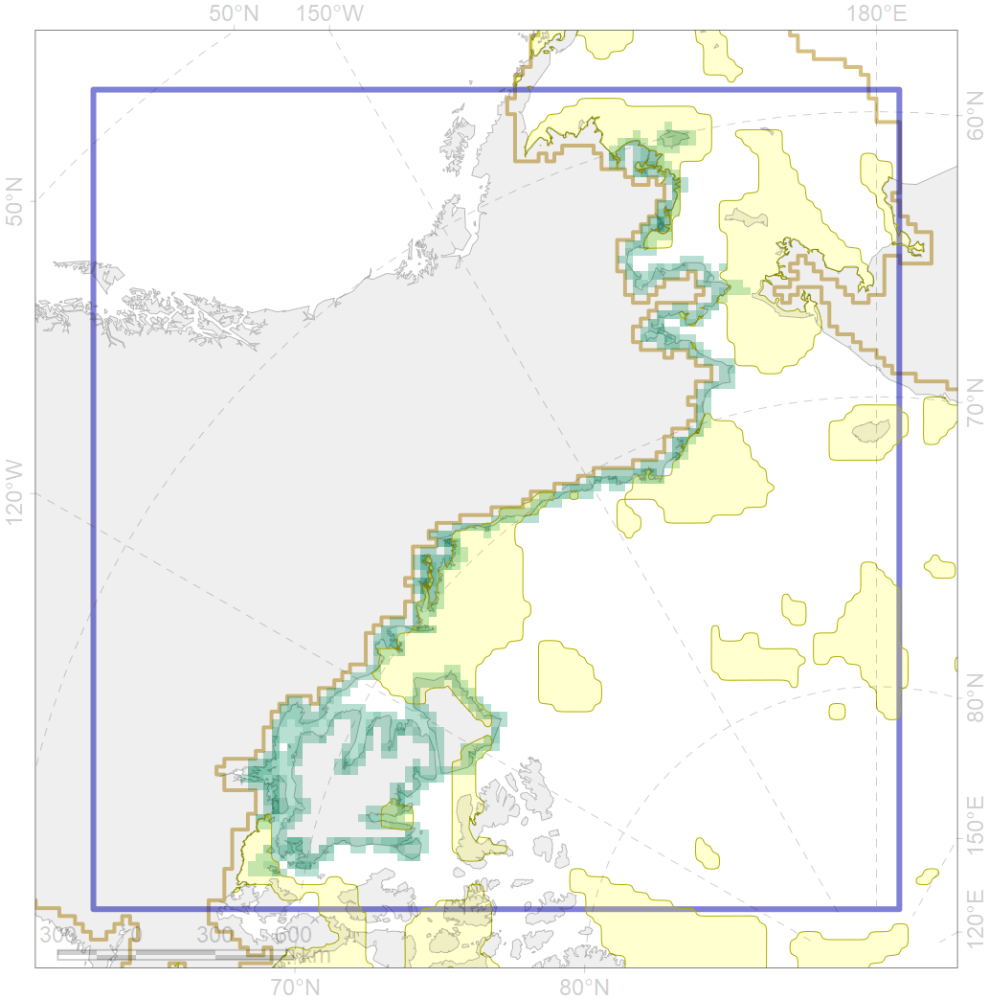
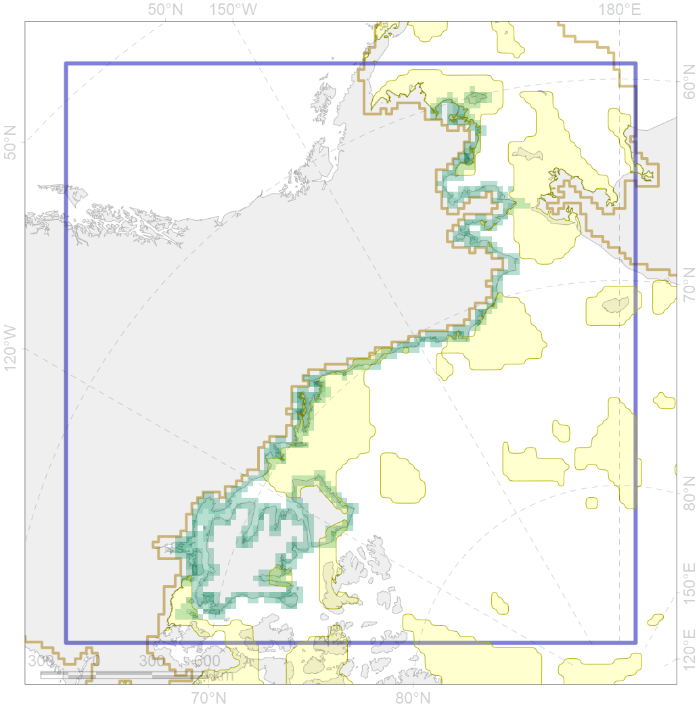

6010
![[]{style="display: none;"}](s5309bac1a.png) 

| CF code | 6010 |
| CF name | Brent goose (Branta_bernicla_nigricans) American breeding&moulting grounds |
| Time Period | 2015 |
| Source(s) | Ball & Stenhouse 2018, https://commons.wikimedia.org/wiki/File:Branta_bernicla_map.png |
| Seasonality | May-September |
| Depth Horizon | ≥0 m |
| Methodology | Field Data |
| Use Restrictions | Open source |
| Author Name | Gavrilo, Tertitski |
| Notes | |
| Scenario’s Target | 0.24 |
| Target Achievement | 0.341 (Scenario: 142.1%) |
| PAC | Share of the Total Amount within the PAC | Share of the Target Achievement for the ArcNet | PAC’s Contribution to the Target Achievement |
|---|---|---|---|
| 3 | 4.8%10.8% | 19.2%42.8% | 13.5%30.1% |
| 5 | 0.4%0.6% | 1.3%2.1% | 0.9%1.4% |
| 6 | 0.3%1.0% | 1.3%4.0% | 0.9%2.8% |
| 60 | 1.8%3.4% | 6.2%8.6% | 4.4%6.0% |
| 61 | 0.1% | 0.5% | 0.4% |
| 62 | 11.8%16.6% | 41.7%47.4% | 29.4%33.4% |
| 63 | 1.4%1.4% | 4.8%4.9% | 3.4%3.4% |
| 64 | 2.1%2.1% | 7.1%7.4% | 5.0%5.2% |
| 65 | 1.7%2.0% | 5.2%6.3% | 3.6%4.5% |
| inner | 24.4%38.0% | 87.5%124.0% | 61.6%87.3% |
| outer | 75.6%92.1% | 54.6%113.7% | 38.4%80.1% |
| † supplement values are for area consistence whereas principal values are for Accenter compatible gridded stats |
{kind=link}